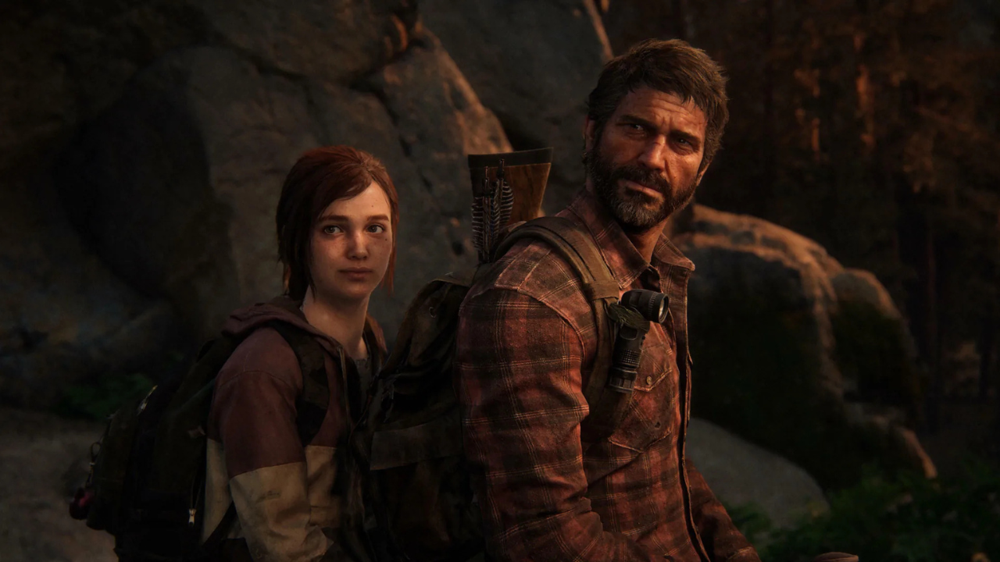
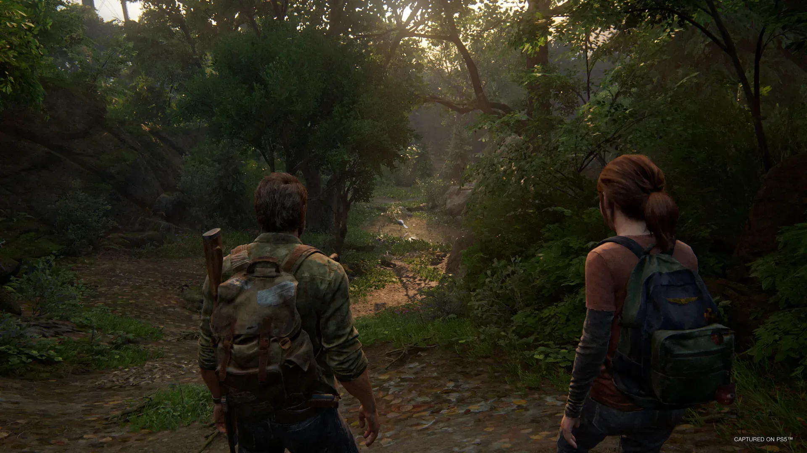
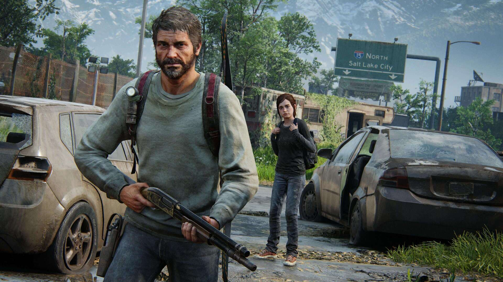
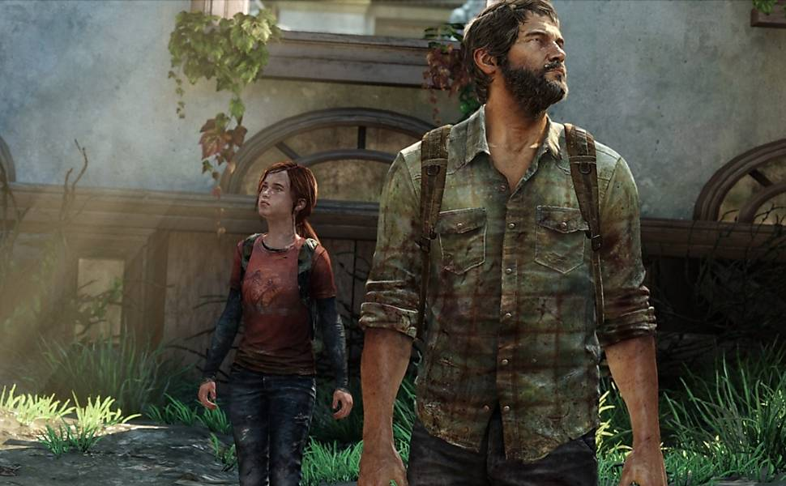
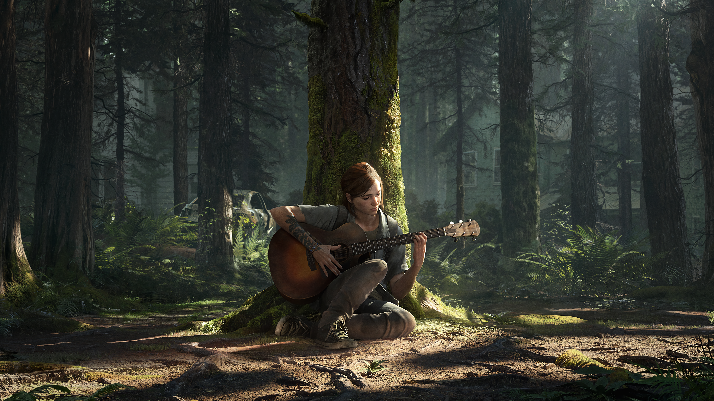

The Last of Us é um jogo de ação-aventura e sobrevivência pós-apocalíptico da Naughty Dog, aclamado por sua narrativa e personagens. A história segue Joel, um contrabandista encarregado de escoltar Ellie, uma adolescente imune, por uma América devastada por um fungo que transforma as pessoas em infectados. A jogabilidade combina tiroteio, furtividade e combate corpo a corpo contra infectados e outros sobreviventes hostis.



📜 História e Enredo (Com pouquíssimos spoilers)
Ambientação: O jogo se passa cerca de cinco anos após os eventos do primeiro The Last of Us. Local: Ellie e Joel se estabeleceram em Jackson, Wyoming, uma próspera comunidade de sobreviventes. Ponto de Partida: A vida em Jackson é interrompida por um evento violento e traumático que atinge a vida de Ellie diretamente, marcando um novo e brutal ciclo de ódio. O Tema Central: Ellie embarca em uma jornada incansável e obsessiva por vingança até Seattle, Washigton, confrontando as repercussões físicas e emocionais devastadoras de suas ações. Perspectivas: Uma das características mais notáveis do jogo é a alternância de protagonistas. O jogador controla Ellie durante a maior parte da primeira metade, mas também passa a controlar Abby, uma nova personagem com sua própria história e motivações, o que força o jogador a vivenciar ambos os lados do conflito. Moral da História: A narrativa complexa e emocional questiona as noções de certo ou errado, herói ou vilão, explorando o ciclo da violência e como o ódio pode consumir e destruir vidas.
🌟 O The Last of Us Part II Remastered (PS5)
A versão lançada para o PlayStation 5 trouxe melhorias gráficas (resolução 4K nativa, melhorias nas texturas e taxas de frame rate), além de novos recursos: No Return (Sem Volta): Um novo modo de sobrevivência roguelike (onde o progresso é reiniciado após a morte) com encontros aleatórios e vários personagens jogáveis. Lost Levels (Níveis Perdidos): Fases incompletas e cortadas do desenvolvimento, com comentários dos desenvolvedores, oferecendo um olhar sobre o processo criativo.